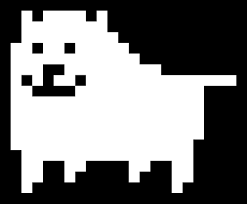

El Genio de Toby Fox
Una de las características más celebradas de Undertale es su excepcional banda sonora, compuesta enteramente por Toby Fox. La música no solo ambienta escenas, sino que se integra profundamente en la narrativa y mecánicas del juego.
Temas Icónicos
Cada personaje y área importante tiene su propio tema musical que evoluciona a lo largo del juego. Algunos de los más memorables incluyen:
- Megalovania: El tema de batalla contra Sans en la ruta Genocida
- Hopes and Dreams: La emotiva batalla final de la ruta Pacifista
- Bonetrousle: El tema alegre y enérgico de Papyrus
- Undertale: La canción principal que da nombre al juego
- Spider Dance: El tema de Muffet con ritmos únicos
Música como Narrativa
Lo que hace especial la música de Undertale es cómo se entrelaza con la historia. Los temas se repiten, se transforman y se combinan para reflejar el desarrollo de los personajes y la progresión de la trama. Por ejemplo, el tema "Once Upon a Time" que escuchamos al principio reaparece transformado en momentos clave.
Leitmotifs y Transformaciones
Toby Fox utiliza leitmotifs (temas recurrentes asociados a personajes o ideas) que evolucionan según el contexto. El tema de Asgore, por ejemplo, comparte elementos con el de Toriel, reflejando su pasado como pareja.
← Volver al Inicio